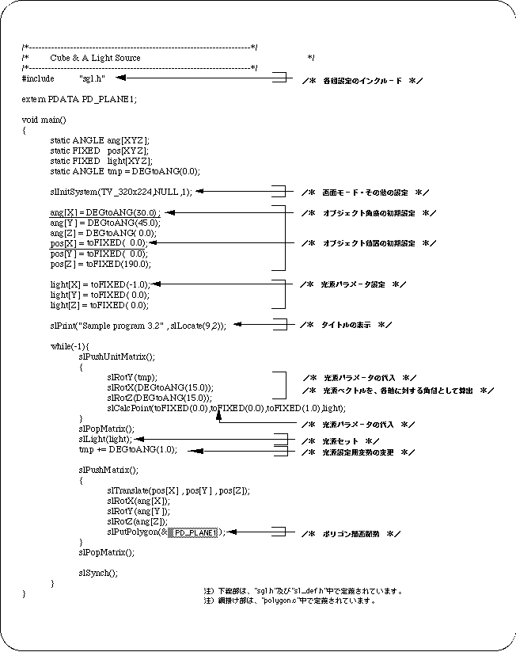
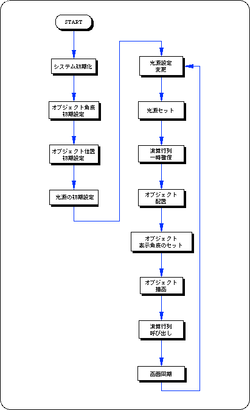
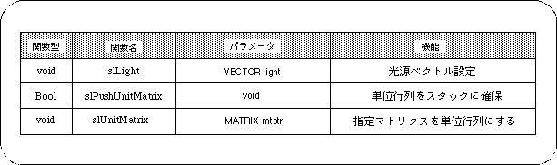

Return to previous page | Return to menu | Go to next page
Use the function “slLight” to set the light source in SGL. The light source function has only a direction vector (light source vector) that represents the direction of the light, and does not include light intensity or color information.
The polygon color determines the polygon color from the angle of incidence of light on the surface.
The closer the incident angle is to the vertical, the brighter it is, and the closer to the horizontal, the darker the image is displayed. The negative vertical direction is the darkest.
If various conversion operations such as scale are applied to the current matrix, the light source calculation may not be performed correctly.
This occurs because the user uses matrix operation to calculate the light source vector specified by the function “slLight”. Therefore, when setting the light source, it is necessary to initialize the current matrix.
Use the function “slPushUnitMatrix” or “slUnitMatrix” to initialize the current matrix.
Reserves a unit matrix on the stack and makes it the current matrix.
The previous current matrix is temporarily saved at a higher level in the stack.
parameter is used as the unit matrix.
Assign the specified MATRIX type variable to the parameter.
If “CURRENT” is specified for the parameter, the conversion target matrix becomes the current matrix, and the current matrix can be initialized.
For details of the current matrix and matrix function, refer to “Chapter 5: Matrix”.
The following list 3-1 shows the change in the shade of the cube polygon surface when the direction vector of the light source is changed one after another for a cube placed in space.


In this chapter, the functions in the following table were explained.
